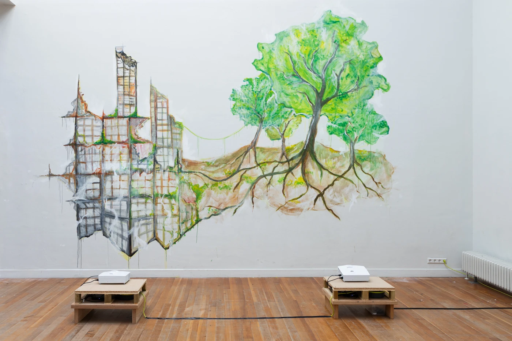
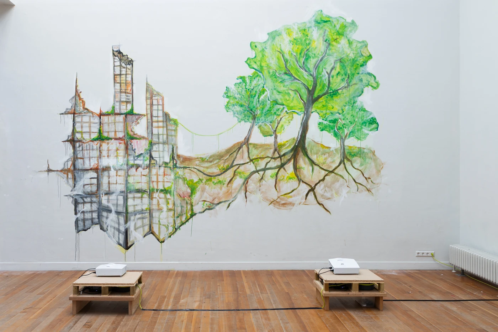

metamorphoses kabk image class '25

About
Metamorphoses is a block-long project in which KABK Graphic Design third-year students developed new
works in various formats, with a diversity of narratives presented in a collective exhibition.
By researching, modifying, and reflecting on the
concept of Metamorphoses, they are testing
the capacity of the term itself and
visualising its imaginations on our lives.
The term metamorphoses can be applied to many different domains: arts, ecology/nature, politics, socio-historical happenings. The study of form is all about studying the manifestations of life.
What can (graphic) design contribute to social transformation? Who determines what shapes design takes in order to create different solutions for challenges at hand? In times of fluidity of gender or identity, what aspects or actions construct our identity? Currently there are a lot of ecological challenges for our societies. What binds communities and what separates them? How can personal and collaborative development benefit artistic change? Change comes when a vision can take on a “body”(form) in the world.
overview
Andre Kahveciyan
Red lights and plugs going nowhere
A4 sheets, -
Andre Kahveciyan's installation 'red lights and plugs going nowhere' transforms the exhibition space into a trace of a rave—an echo of movement, music, and fleeting moments. A4 sheets, scattered across the space, act as portals through time. Capturing glimpses of a night that is neither past nor present. Setlists, cigarette buds, bottle caps, and taped-down cables suggest a history of energy and sound. The spots of red floors reflect the glow of club lights. By altering the gallery's function, the installation explores how space is shaped by human presence, rhythm, and ritual. It is a study of transformation—how spaces absorb and release energy, how memory lingers in objects.


Armand Demulder
Erasmus Sacred
metal, paint, 200×300×80 cm
How does the Erasmus exchange program bring about a cultural and identity transformation (personal and professional)? It all starts with a familiar structure, an established form, my starting point. France, my comfort zone. A defined space, with precise contours, where everything is known and mastered. Then comes the leap into the unknown. The structure breaks down, bends, intertwines.The language changes, the environment is transformed, faces multiply and landmarks fade. A period of exploration and instability, when everything seems to be rebuilt. Little by little, a transition takes place. The sculpture, chaotic at first, begins to find its rhythm. It evolves, seeking a balance between what it was and what it is becoming.There's something dreamlike about this adaptation, a movement between loss and wonder. Then accommodation sets in, adaptation becomes strength.The foreign becomes the familiar.Then the form rises, carried by this transformation. More fluid, freer. Like an impulse towards a new 'me'. For this experience, beyond learning, offers an unexpected power: that of breaking the straight line of the 'ordinary' to soar towards the unknown, towards the sky.There's something sacred about Erasmus. It's a suspended moment, a rite of passage that must be honoured. An immense opportunity, an open door to another version of yourself.
Frederico Matos Pereira
Redefine Food
plasticine, mirrors, 200×200×100cm
Frederico Pereira explores the future of food through the lens of the modern food industry, highlighting the tension between hyperreality and consumer awareness. A dining table is set with plates of food crafted from plasticine, offering a playful yet unsettling interpretation of what we consume. Surrounded by mirrors, the viewer is prompted to look beyond the surface, revealing a hidden video showing the process of manufacturing these artificial foods. Through this juxtaposition, Frederico aims to challenge the processed nature of contemporary food and the deceptive practices within the industry. The mirrors reflect not only the food but also the unseen forces shaping our consumption choices. By redefining food production in this surreal manner, the work invites viewers to reflect on the importance of informed decision-making and the power of awareness in shaping a more conscious, sustainable future.
Dhairya Garg
Loss has no Script
threads, nails, Post-lts, headset, 200×200×5cm
Is grief truly a linear path? Are we meant to feel a set of predetermined emotions? How can two experiences be alike when each of us walks a unique path, forms bonds in our own way, and loves differently? How can our grief ever be the same? The only common thread is loss itself—everything else is deeply personal, raw, and unrepeatable. And yet, when someone grieves in a way we don't understand, we stand in quiet judgment, questioning how they could feel what they feel. Today, I ask you to suspend your judgment. Listen to the truths of others, and dare to share your own. What did you truly feel in the face of loss? How did the sadness touch you? What was your experience? #Weave your Grief

Pyotr Golub
Nebokukuevsk
mirrors, projector, openFrameworks, Raspberry PI, Pure Data, sonic distance sensor, 350×350×350cm
The space flickers. It pulses. It does not wait for the eye to adjust. Light fractures. Darkness spasms. The room breathes in tension. For some, a doorway. For others, a rupture. From the void, something watches. Neither alive nor inert, it lingers—waiting, measuring. A force that does not ask but demands: Who comes forward? It does not speak in words but in the language of disruption, by the pressure of violence. It does not threaten; it questions. Is man its equal? Does he carry something to trade for its negative freedom? This is time's challenge to man, whispered through flickering light and infinite space. The work draws its origin from Aristophanes' Birds, where the will to build a city between sky and earth first brewed. Here, audio-reactive visuals, sensor-driven inputs, and real-time graphics summon that ancient impulse. And the question is due: do you wish to reclaim control over the violence?
Meabh O'Halloran
Self Portrait, 03/25
chicken wire, plaster, laser print
Combining biological and digital processes, Meabh creates a sculptural self-portrait that encompasses the plural selves that form and coexist online. As personal meaning is assigned to images, the boundaries between the self/the other and reality/fiction blur. Memes serve as tools for understanding and relating to emotions. A qualitative self emerges as identity is assigned to images through labels and captions of 'me.' Narratives develop around these plural selves, with memes becoming instruments in the ongoing process of identity creation and transformation. Guided by the organic expansion of a rhizomatic root, Meabh collects images based on the decisions of her algorithms. Using memetic autotheory, she explores how we both define and evade description, continuously becoming and unbecoming ourselves.


Romain Bénard
Communion
TV screen, webcam, computer, 100×60×10cm
The relationship between humans and nature has always been complicated, and it is in this urban space where this conflict is most visible. In the city, man is separated from nature, sheltered from the uncertainties it produces. In the cities where Romain grew up and lived the most, the architecture and urban planning seemed to hide these signs of nature that evolved with the city instaed of being against it. His goal is to account for and analyze this change, this decomposition.These forms, caused by numerous events, are both varied and unpredictable, bringing us to ourselves, to the modifications of what we have erected, to a metamorphosis of time. This communion exists between the urban and natural environments, between man and nature, which takes on its whole meaning in degradation. The artist wants to show with this project that we are united by the metamorphosis of time with nature, that we act as two passive actors in a change that only occurs through time. Romain's work highlights in 'unnatural' environments (constructions, textures) this communion and creation that the natural elements (human and nature) engender.


Simcha Ziya Moïse
Detached
hair, photo prints, 59×168×8cm
Hair is always changing—growing, shedding, twisting into knots, or being cut away. It is both a record of time and a way to convey identity.Yet, once separated from us, it often provokes discomfort. Stray hairs on a bathroom sink or a tangled mess serve as unsettling reminders of what was once part of us. Detached, hair is treated as waste—something to be washed away, vacuumed up, and discarded without thought, as if its significance vanishes the moment it leaves our bodies. But is this the way to go forward? In a world striving for sustainability, can hair be rethought as more than just something disposable? Can it still possess beauty when no longer attached to our bodies, or does its value depend solely on being part of us? Instead of dismissing it, its potential could be recognized—transforming what was once overlooked into something purposeful. With this work, Simcha invites the viewer to reconsider the value of hair beyond the body by seeing it as a material with meaning and possibility.
 


ViCi Feger
Reshaping Futures
painted acrylic mural, two video projections, two pillars, 200×600×250cm
The system is collapsing. Exploitation, division, and instability are not anomalies—they are the design. But while the old world crumbles, a new one is already taking root. In this work, the artist captures the tension between destruction and regeneration. A large-scale mural depicts the ruins of a failing system gradually transforming into roots and a thriving ecosystem. Overlaid on this surface, a multimodal video collage intensifies the contrast. Chaotic imagery of fear, division, and collapse gives way to scenes of community, resilience, and renewal, revealing that alternative ways of living are not distant ideals, but present realities. Murals, historically tools of resistance, stand as fixed and monumental statements. The projection, in contrast, introduces fluidity—reminding us that the future is not set in stone. It is being shaped, in real-time, by those who refuse to wait.The time to act is now!

Anna Silva Zeller
Sleep Tight, Big Shot.
Paper, Copper wire, Speaker, 400×100×100cm
Not of their gold but of their days shall they be stripped. In her work 'Sleep tight, big shot.' Silva proposes a fictional solution to the injustices of the climate crisis by adapting the concept of aestivation— animal dormancy during hot, dry periods—to humans. In a shell-like space on the ceiling, People will spend a percentage of the year in prolonged states of sleep, in order to reduce emissions while preserving the comforts of modern day life. The duration of dormancy is calculated based on the amount of CO2 each person emits annually beyond a sustainable limit of 1.8 tons, a threshold necessary to achieve net-zero emissions by 2050. An example: In 2022, the average Dutch citizen emitted almost 8 tons of CO2. After the introduction of the co2 limit, they would aestivate for 175 days of the year, leaving them with 190 days of wake-time. In this system, those responsible for the greatest harm will face the consequences of their actions, in contrast to the inequities of our current reality.

Maja Usak
Lobotomy of the Body
steel plates, LCD screens, liquid latex, wires, composed perfume, 180×120×15cm
Hunger wrapped in skin. A primitive machine, useless, dysfunctional. It gasps for air, its organs lie heavy, its limbs weak. You can feel it too. Falling behind, serving no higher purpose. you can't deny it. We have outgrown it. Its heart pacing, struggling to Keep up. Its lungs filled with useless filthy air. You stretch out a hand, a reflex, nothing more. An attempt—— trying to prove it still serves a purpose. But it doesn't. It's pointless. A crude mechanism, outdated. Inefficient. It has nothing left to offer. We have moved on. No more hunger, no more twitching no more trembling. Let the body decay. We are not creatures of impulse anymore. We do not live for the now. 'Lobotomy of the body' takes on philosophies of Jean Baudrillard's 'Metamorphoses metaphors metastases' and explores the disconnection between mind and body in the context of technological progress. The body, now a decaying vessel, is slowly getting consumed by the ever-expanding mind.

Vlad Omelianenko
A Graphic Tone
paper, graphite, 210×210×50cm
"Graphite is soft carbon. Were it hard enough to withstand contact and remain totally self-contained it would not be useful for writing. Graphite gives up some of itself upon contact with paper. Graphite suffers a loss that leaves a mark." —Nathaniel Mackey Translation is entirely mysterious. In his work, Vlad Omelianeko is trying to see the creation process as one of translation rather than anything else. What is it that gets translated? What is the original? Translation shows that language is a slippery thing. It also always comes in a certain form, be it on a paper, on a screen, or a voice. A voice is not a visual form. "A Graphic Tone". The work is a collage of rubbings or marks, which Vlad traces and leaves behind. It is trying to find and seize the connection between "graphite"—to rub, to mark, to affect, to touch—and "graphic"—a form, to write, to create—reflecting on the above mentioned question.


Maya Sagara Curé
Rituals
plastic, fabric, hair, 170×150×175cm
The artist's installation recreates a bathroom, reflecting the metamorphosis her mother went through from being a model to becoming a Buddhist nun. This space represents her current state of mind inspired by asceticism, veiling and memory. The objects that were once part of her rituals now serve as vestiges of her past as their meanings changed. They bear witness to a life shaped by physical appearance and the male gaze. She now exits in a paradox, she is both looked at and overlooked. The absence of a functional mirror symbolises her detachment from self-image: "You see yourself through the eyes of the others." Maya explores how a physical transformation can serve as a means of expressing an internal change to the outside world. She shows how this process allows intimacy to be communicated beyond words.


Jiyun Nam
Coming in and going out
yeast, bacteria, tea, sugar, glass, 150×250×100cm
Jiyun presents an installation that visualizes the transformation of sugar and tea into kombucha through the fermentation process of a SCOBY (Symbiotic Culture of Bacteria and Yeast) over time. SCOBY, a microbial culture where bacteria and yeast coexist, absorbs nutrients and organic matter from its environment, metabolizing them into a new living substance—kombucha. This metabolic process is not merely a chemical reaction but is deeply connected to the cycles of life, as well as the boundaries between life and death. The impact of these microbial activities gradually expands, manifesting through visible physical transformations. Similarly, the human body is not an isolated entity but a system that coexists with microbes. Every day, we consume food, digest it, and rely on microbial interactions to sustain our bodies, constantly exchanging matter with the environment. Through the act of consuming the kombucha produced by SCOBY, the artist poses the questions. "What do we take in, and what do we release?"
Miron Konurbaev
Sleeping Enough?
screens (monitors & tablets of different sizes), video and sound, mattress and bedding, 60×200×100cm
"There will be sleeping enough in the grave." —Benjamin Franklin Many people share this mindset today. The culture of overconsumption, over production and overwork tells us that sleep is a waste of time, a disposable commodity that can be traded in for productivity. —"Sleeping enough?" is an exploration of our relationship with sleep. Through a collection of videos, Miron is trying o grasp various aspects of productivity-driven work culture — particularly within the digital realm — and how these affect our sleeping habits. Snugly lying on the mattress, six screens challenge the existing narrative about sleep, each posing a different question. Who sleeps in our society according to Google Images? How productive could we be if we didn't have to sleep at all? And what if we planned time for sleep as rigorously as we plan time for work? Questioning the dominating mindset, this project seeks healthier alternatives and invites the viewer to rethink their own attitude towards sleep.


Alex Rainer
Fragile Society
glass, spray paint, aluminium tape, wood board, 250×120×10cm
In times where we happily exploit our selves for achievements or short-lived stimuli, where life outside of work, culture, rituals all in the same way lead us back to work. In these times our society accelerates towards psychological and emotional overload, where the boundaries between rest and work blur. By shattering words like "24/7", "Non Stop", or "Hyperactive", the work of the artist visually explores and communicates how constructs once considered unbreakable can be dismantled and reshaped. Not just the act of shattering but also the material itself, the glass so fragile and delicate, possesses the capacity for transformation. Once shattered, it can be melted down and reformed into something entirely new. While the act of breaking may initially appear destructive or inappropriate, it can also serve as a powerful catalyst for profound change that sometimes involves confronting discomfort.


Hlynur Sævarsson
Light: New World
Virtual reality headset, chair, dirt and flowers, 100×100×100cm
In Light: New World, Hlynur explores our perception of light and sight. In a void, a digital space that resembles reality is slowly brought to light. Small portions of what we perceive to be light slowly reveals our surroundings. What would it look like to gain access to a new way of sensing our surroundings? In the artwork, Hlynur creates a new virtual world that manipulates light in unnatural ways, revealing the surrounding landscapes and nature. By making the installation in virtual reality, Hlynur eliminates the limitations of reality and the space becomes endless. Light is manipulated in abstract ways that resemble the abstract idea of gaining access to new senses. In the virtual space the viewer can take a seat in the familiar Monobloc chair which serves as a way of grounding and familiarity.

Eva Georgescu
Iconostasis 10
wood, acrylic paint, 250×375×100cm
Sacrilege is an act of deep affirmation and repositioning against the dominant culture. In this installation, the artist seeks to reflect on the omnipresence of religion and its role in the discourse concerning queerness. Many queer Romanians have been involved in some capacity with Orthodxism, or religion in general and have been confronted by hateful messaging. As they reinven themselves by unlearning these prevailing narratives, they go through a subversive transformation process, by re-appropriating and morphing religious imagery. The artist's work is in and of itself a process of transformation, an act of sacrilege. The wooden structure represents the three doors of an Orthodox iconostasis, which are only to be entered by men. The cutout of the two lesbians sexually engaging with each other plays with the idea of visibility beyond the frame. It claims space from the religious authorities who are guarding womxn from accessing the sacred.
Omid Nemalhabib
Verses of Destruction
Stone, letter carving tools, cement blocks, soil, and burnt paper, 300×300×300cm
Do you know who truly rules this land? It is the one who turns every thing you see into ruin. In the end, the house of tyranny will collapse; What stands tall today will crumble tomorrow. The noble and the worthy have sunk into the depths of destruction, The city once home to the great is now trampled by strangers. —Hafez (1315–1390) Inspired by Hafez's poem, Omid presents a vision of decay and destruction in his installation, exploring the transformation of societies and the concept of metamorphosis in politics and history. Through fragments of stone, cement blocks, soil, and burnt paper inscribed with verses and patterns, the scene portrays ruins and the inevitable collapse of power. The artist's presence—sitting on a stool and carving into stone—symbolizes the struggle to preserve memory amid decay. As he reads the poem in both Farsi and English, the performance reflects on how power rises and falls, leaving behind remnants that speak of impermanence and the relentless cycle of history.
Suzie Veldhuijzen
My Believes
cabinets, blanket, God figure, 100×300×100cm
"People who have a religion should be glad, for not everyone has the gift of believing in heavenly things." —Anne Frank When the artist was 7, she felt jealous of people who believe. So she made up her own religion by drawing a third eye on a doll to represent her own god, and she built a hut in her room. The hut became a place for everyday prayer. Although she didn't know how to pray. This experimental religion ended after a week. Suzie is still interested in religion but can't seem to find her own faith. She lost confidence to be sure about what she believes without questioning it. Her creative, innocent and naive power which she had when she was 7 has disappeared. In her work Suzie is searching for this feeling of real trust in herself and in her own beliefs. She invites you into the hut she made when she was 7 to think about your own believe and how this has been shaped over the years.
Colophon
Exhibition Team:
Vlad Omelianenko
Andre Kahveciyan
Anna Silva Zeller
Frederico Matos Pereira
Armand Demulder
Romain Bernard
Alex Rainer
Website Team:
Jiyun Nam
Maja Usak
Omid Nemalhabib
Pyotr Goloub
Guiding Teachers:
Katrin Korfmann, Image
Maarten Cornel, Philosophy